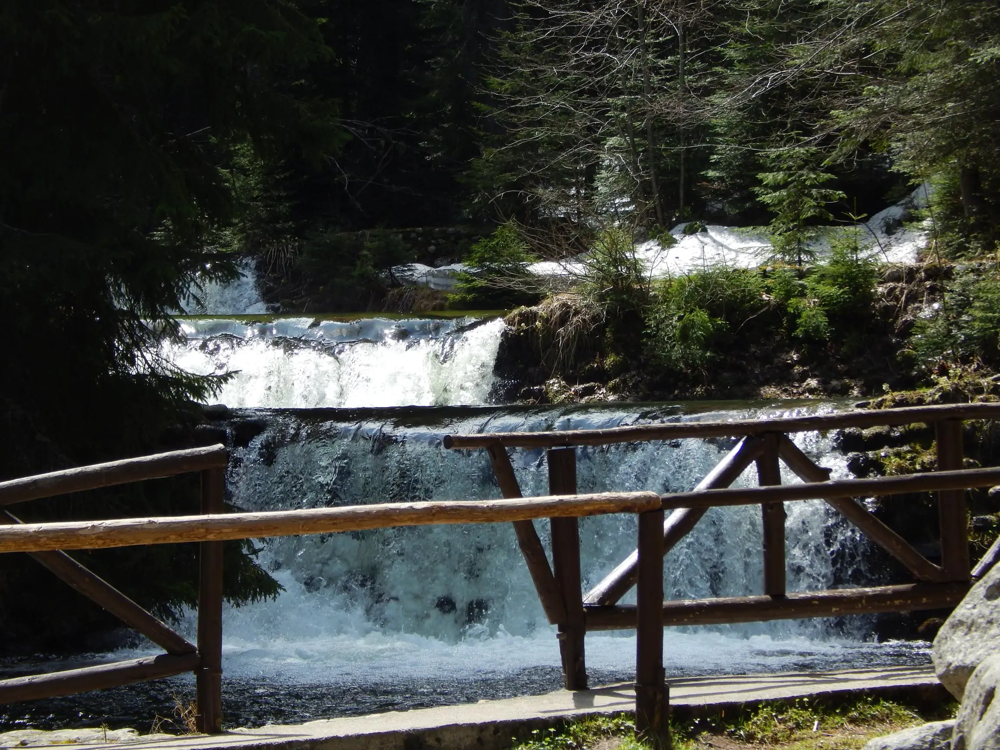
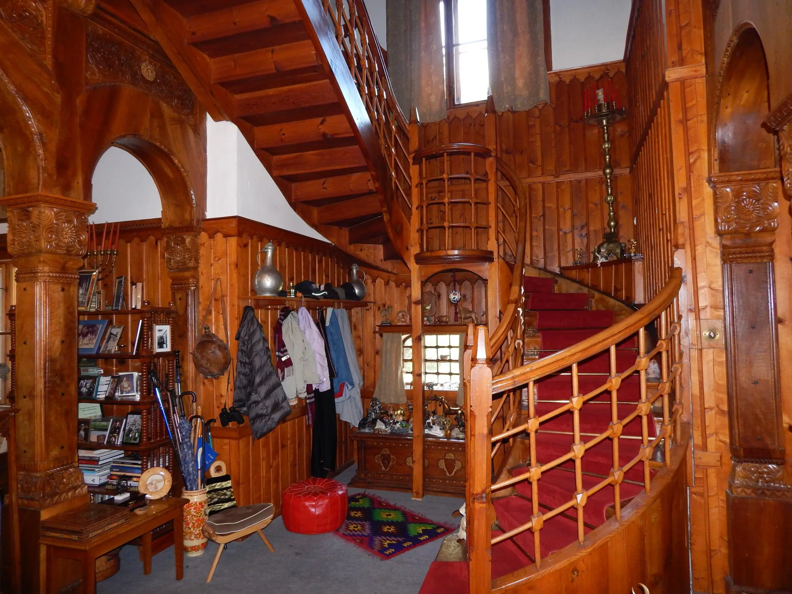
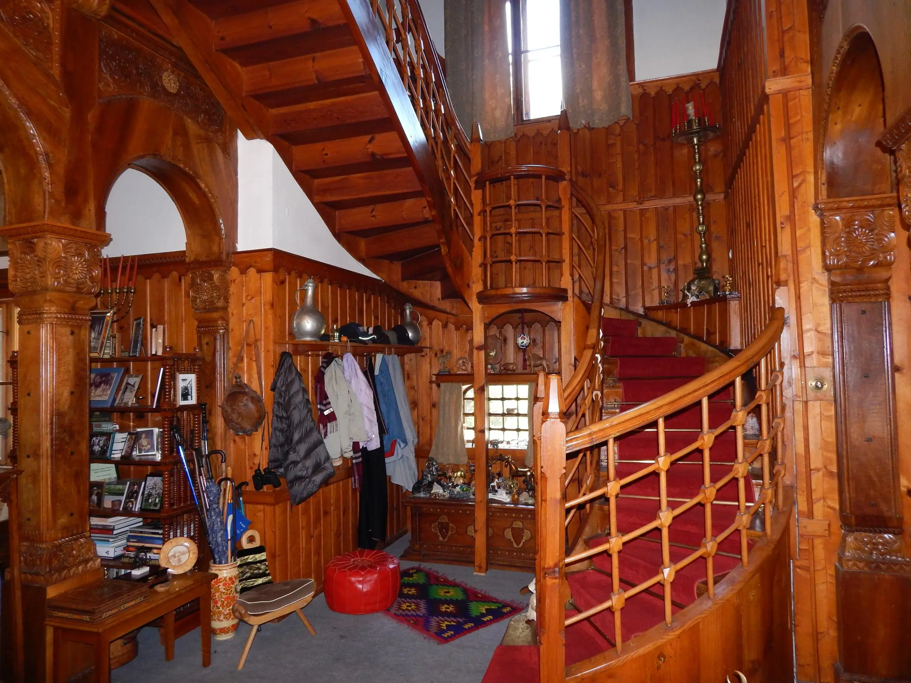
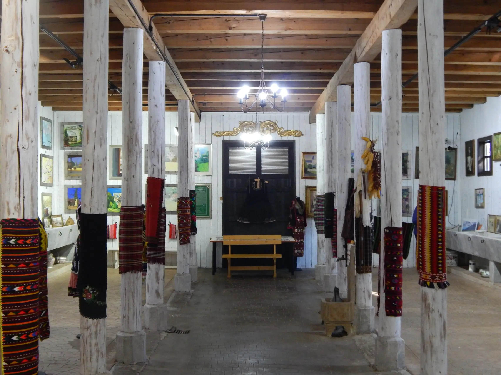
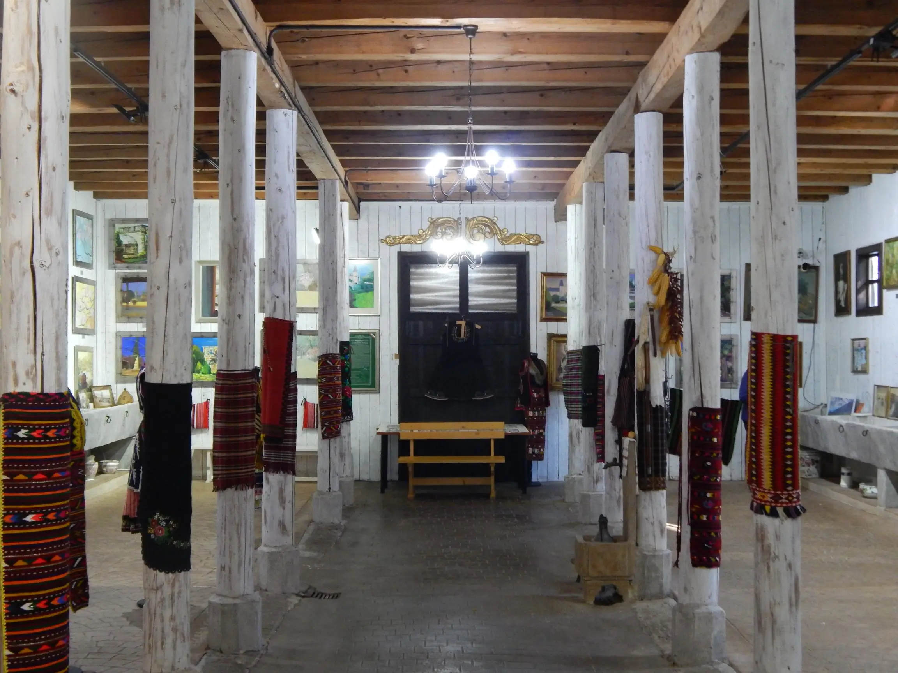
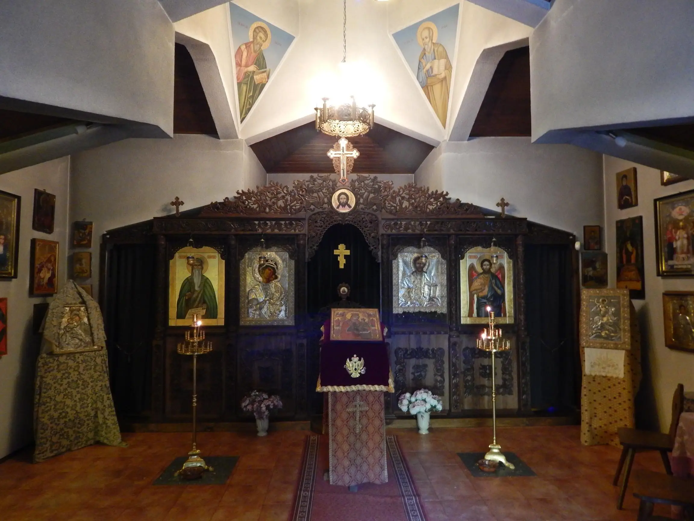
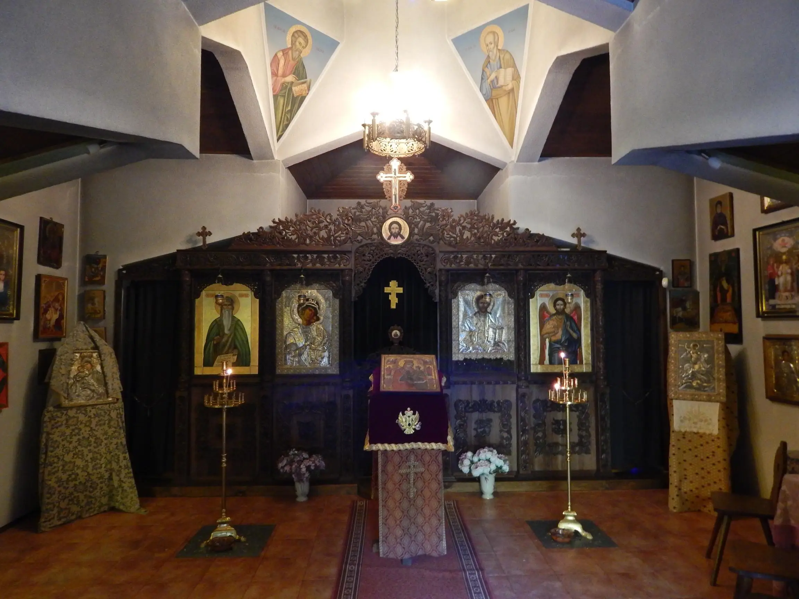
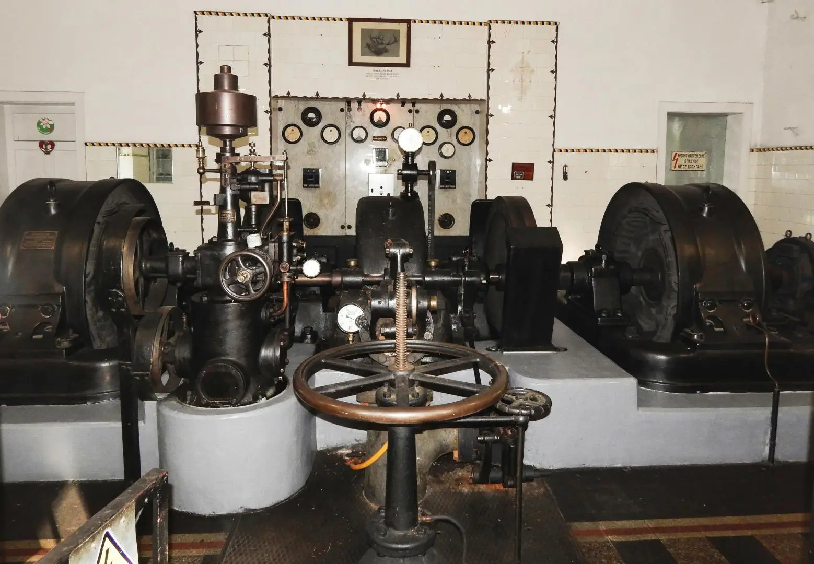

The "Tsarska Bistritsa" Palace built by King Ferdinand I between 1898 and 1914, is the historical landmark of Borovets. The Bistritsa river running nearby, takes its source from the icy lakes below Mousala peak, the highest in South-Eastern Europe.

The building is an original interpretation of 19th century Bulgarian architecture with traces of European romantic style. The same combination of styles is а characteristic of the interior decoration. The furniture, although European in fashion has hints of folklore patterns which go well with the wooden ceilings and columns carved in the best Bulgarien tradition. The floors are covered with rugs woven in Kotel and Chiprovtsi - small towns, which spread the fame of Bulgaria's carpet industry. One can also see an authentic ship-cabin, a gift King Ferdinand from Jean - Louis Maurice, skipper of the "New America" vessel.
 

The glazed tiles of the stoves are masterpieces of early 19th centrury ceramics. Interestingly, each ofthe fifty stoves varies in shape and colour. The impressive collection of trophies is well preserved.


Carefully replenished for over half a century, the collection bears evidence of the hunting zeal of King Ferdinand I and King Boris III. Although, caper cailzies prevail - a real challenge far every hunter, there are also deer, wild goats, wildboar, black cocks and bustards.

Regrettably, the original rock-garden created by King Ferdinand I, has not stood the bruden of time. Still, some interesting plants, not typical far this part of the world, have survived.
In 2009 the old stables were converted into a spacious gallery with various paintings, historical phootos and a collection of Bulgarian traditional costumes.
 

On 21st October 2006 was sanctified the chapel "St.John of Rila". It was built and dedicated to princess Kalina and Kitin Muñoz, whose wedding took place in "Tsarska Bistritsa" in 2002.
 

The Siemens water turbine of the hydroelectric power station built in 1912 is still in operation. The electric radiators in the Palace compete in efficiency and design with today's appliances.
